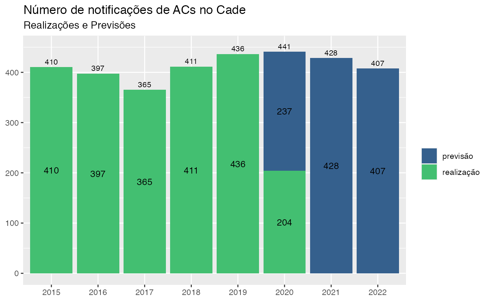

05.Resultados.RmdEste painel tem como finalidade atender a demanda recorrente da Diretoria de Administração e Planejamento DAP/CADE por manifestações do DEE quanto a previsão do número de atos de concentração (AC) a serem notificados ao Cade.
Dados mais recentes são mensalmente adicionados a base de informação do DEE tornando possível a identificação de novos modelos econométricos mais adaptados à tarefa de acertar, na média, o número de notificações futuro.
Resultados do modelo de curto prazo
# Realiza-se a carga dos resultados: output<- readRDS(file = system.file("3.output", "1.data", "output_resultado.rds", package = "previsaoAC"))
Resultados do modelo de longo prazo
output_lrun<- readRDS(file = system.file("3.output", "1.data", "output_resultado.rds_lrun", package = "previsaoAC"))
Dados gerais
Agregando as informações de realizações e previsões mensalmente
Agregando as imformações de realizações e previsões anualmente
## `summarise()` regrouping output by 'ano' (override with `.groups` argument)Até 2024
## `summarise()` ungrouping output (override with `.groups` argument)## Warning: Ignoring unknown aesthetics: fillAté 2021
## `summarise()` ungrouping output (override with `.groups` argument)## Warning: Ignoring unknown aesthetics: fill
O modelo escolhido pelo algoritmo foi o seguinte: ac ~ factor(mes) + slica.
Onde:
(…) [Aqui a descrição das variavéis do modelo escolhido]
Este modelo é um dentre 32 outros modelos testados que contavam com um conjunto de variáveis macroeconômicas que supostamente seriam capazes de afetar o número de atos de concentração.
Dito de forma sucinta, sua escolha se dá por ser este modelo o que apresenta a menor soma dos quadrados dos erros (diferença entre a previsão feita fora da amostra e o valor observado) dentre todos os modelos avaliados.
O número de atos de concentração que devem ser apresentados na autarquia no ano de 2021 é, portanto, de: 428
Até o mês de Junho já foram notificados atos de concentração. Estão previstos para o resto do ano 428 novas notificações.
## `summarise()` ungrouping output (override with `.groups` argument)## Warning: Ignoring unknown aesthetics: fillEis a disitribuição das previsões para o resto do ano.
models<- function(x){ int <- int[[x]][[31]] %>% filter(ano == 2020) %>% group_by(ano) %>% summarise(prev = sum(prev)) int$prev } modelos<- sapply(X = seq_along(int), FUN = models)
## `summarise()` ungrouping output (override with `.groups` argument)
## `summarise()` ungrouping output (override with `.groups` argument)
## `summarise()` ungrouping output (override with `.groups` argument)
## `summarise()` ungrouping output (override with `.groups` argument)
## `summarise()` ungrouping output (override with `.groups` argument)
## `summarise()` ungrouping output (override with `.groups` argument)
## `summarise()` ungrouping output (override with `.groups` argument)
## `summarise()` ungrouping output (override with `.groups` argument)
## `summarise()` ungrouping output (override with `.groups` argument)
## `summarise()` ungrouping output (override with `.groups` argument)
## `summarise()` ungrouping output (override with `.groups` argument)
## `summarise()` ungrouping output (override with `.groups` argument)
## `summarise()` ungrouping output (override with `.groups` argument)
## `summarise()` ungrouping output (override with `.groups` argument)
## `summarise()` ungrouping output (override with `.groups` argument)
## `summarise()` ungrouping output (override with `.groups` argument)
## `summarise()` ungrouping output (override with `.groups` argument)
## `summarise()` ungrouping output (override with `.groups` argument)
## `summarise()` ungrouping output (override with `.groups` argument)
## `summarise()` ungrouping output (override with `.groups` argument)
## `summarise()` ungrouping output (override with `.groups` argument)
## `summarise()` ungrouping output (override with `.groups` argument)
## `summarise()` ungrouping output (override with `.groups` argument)
## `summarise()` ungrouping output (override with `.groups` argument)
## `summarise()` ungrouping output (override with `.groups` argument)
## `summarise()` ungrouping output (override with `.groups` argument)
## `summarise()` ungrouping output (override with `.groups` argument)
## `summarise()` ungrouping output (override with `.groups` argument)
## `summarise()` ungrouping output (override with `.groups` argument)
## `summarise()` ungrouping output (override with `.groups` argument)
## `summarise()` ungrouping output (override with `.groups` argument)
## `summarise()` ungrouping output (override with `.groups` argument)modelos<- modelos + 125 ggplot()+ geom_histogram(mapping = aes(x = modelos), binwidth = 5)+ ggthemes::theme_fivethirtyeight()
summary(modelos)
## Min. 1st Qu. Median Mean 3rd Qu. Max.
## 327.1 344.6 357.5 352.6 361.7 368.9Eis os modelos que seriam escolhidos em cada ponto do tempo.
Este modelo é absolutamente conveniente quando contraposto com modelos que usam de variáveis macroeconômicas.
Dessa forma, adota-se para os anos 2020, 2021, 2022 e 2023 as mesmas estimativas de 400 atos de concentração anuais (ver Tabela 1). Tabela 1: Número estimado de atos de concentração para o período 2020-2023 Período Número de atos de concentração - Estimativas 2020 400 2021 400 2022 400 2023 400
Prevê-se para os anos de 2020, 2021, 2022 e 2023 que sejam submetidos à autarquia, a cada ano, 400 atos de concentração.
FIM
Esse código precisa ser ajustado pra ser automatizado. Alguns outputs devem ser salvos no codigo de regressao.
Subindo os dados tratados:
base<- readRDS(file = system.file("3.output", "1.data", "base.rds", package = "previsaoAC")) modelos<- readRDS(file = system.file("3.output", "1.data", "models.rds", package = "previsaoAC")) # PROBLEMA: Qual a origem? # Adaptação para superar inexistência do arquivo # M01<- modelos %>% # filter(modelo == "M01") # M01<- readRDS(file = "3.output/1.data/M01.rds")
Gráfico 1:
ggplot(data = base %>% filter(!is.na(ac)), mapping = aes(x = anomes, fill = factor(ano)))+ geom_bar(mapping = aes(y = ac), stat = "identity", width = 0.8)+ geom_line(mapping = aes(y = ac12c/12, group = 1), size = 1.5, color = "red")+ scale_fill_viridis_d()+ ggtitle(label = "Gráfico 1: Notificações mensais de atos de concentração no Cade", subtitle = "Janeiro de 2015 a Junho de 2020")+ labs(x = "Ano e mês de notificação no Cade", y = "Número de notificações", fill = "Ano", caption = "Obs: A linha em vermelho representa a média móvel de 12 meses.\nFonte: Cade em Números.")+ theme(axis.text.x = element_text(angle = 90, size = 7, vjust = 0.3))
## Warning: Removed 11 row(s) containing missing values (geom_path).
# ggsave(filename = "3.output/2.figures/G1.png")Tabela 1
int<- summary(base$ac) int<- data.frame(matrix(int), row.names = c("Mínimo", "Primeiro quartil", "Mediana", "Média", "Terceiro quartil", "Máximo", "Desvio-padrão")) int[7,]<- sd(base$ac, na.rm = T) int["n",]<- length(base$ac[!is.na(base$ac)]) stargazer::stargazer(int, type = "text", title = "Estatísticas descritivas - atos de concentração mensais", summary = F, digits = 1, covariate.labels = c("", "Atos de concentração"), notes ="Fonte: Cade em Números")
##
## Estatísticas descritivas - atos de concentração mensais
## =====================================
## Atos de concentração
## -------------------------------------
## Mínimo 21
## Primeiro quartil 28.2
## Mediana 34
## Média 33.7
## Terceiro quartil 38
## Máximo 60
## Desvio-padrão 7.3
## n 66
## -------------------------------------
## Fonte: Cade em Númerosx<- M01 x<- x[-1:-2] names(x)<- c("Período", "Observado", "Previsto") stargazer::stargazer(x, # type = "text", title = "Atos de concentração previstos e realizados para o modelo de intercepto - base de treino até dezembro de 2017", summary = F, digits = 1, rownames = FALSE, notes ="Fonte: Cade em Números")
modelos[[1]][1]
## [1] 5.153508modelos<- do.call(what = cbind, args = modelos) dim<- ncol(modelos) colnames(modelos)<- paste0("M", formatC(x = 1:dim, width = 2, flag = "0")) modelos<- as.data.frame(modelos, stringsAsFactors = FALSE) mes<- formatC(x = 1:12, width = 2, flag = "0") ano<- 2017:2020 anomes<- paste0(sort(rep(ano, times = 12)),"-",mes) modelos$anomes<- anomes[12:42] rm(ano, mes, anomes) modelos<- tidyr::pivot_longer(data = modelos, names_to = "modelo", values_to = "rmse", -anomes) modelos<- modelos %>% group_by(modelo) %>% mutate(armse = cumsum(rmse)) ggplot(data = modelos, mapping = aes(x = anomes, y = rmse, group = modelo, color = modelo))+ geom_point()+ geom_line()+ scale_color_viridis_d()+ ggtitle(label = "Gráfico 2: RMSE", subtitle = "Dezembro de 2017 a Junho de 2020")+ labs(x = "Ano e mês da cisão", y = "RMSE", color = "Modelo")+ theme(axis.text.x = element_text(angle = 90, size = 7, vjust = 0.3))
## Warning: Removed 32 rows containing missing values (geom_point).## Warning: Removed 32 row(s) containing missing values (geom_path).
# ggsave(filename = "3.output/2.figures/G2.png")ggplot(data = modelos, mapping = aes(x = anomes, y = armse, group = modelo, color = modelo))+ geom_point()+ geom_line()+ scale_color_viridis_d()+ ggtitle(label = "Gráfico 3: ARMSE", subtitle = "Dezembro de 2017 a Junho de 2020")+ labs(x = "Ano e mês da cisão", y = "ARMSE", color = "Modelo")+ theme(axis.text.x = element_text(angle = 90, size = 7, vjust = 0.3))
## Warning: Removed 32 rows containing missing values (geom_point).## Warning: Removed 32 row(s) containing missing values (geom_path).
# ggsave(filename = "3.output/2.figures/G3.png")## # A tibble: 30 x 5
## # Groups: anomes [30]
## anomes modelo rmse armse min
## <chr> <chr> <dbl> <dbl> <lgl>
## 1 2017-12 M03 4.43 4.43 TRUE
## 2 2018-01 M02 2.43 7.53 TRUE
## 3 2018-02 M02 3.49 11.0 TRUE
## 4 2018-03 M09 3.33 14.4 TRUE
## 5 2018-04 M09 3.16 17.6 TRUE
## 6 2018-05 M09 4.45 22.0 TRUE
## 7 2018-06 M09 4.84 26.9 TRUE
## 8 2018-07 M09 5.32 32.2 TRUE
## 9 2018-08 M09 5.33 37.5 TRUE
## 10 2018-09 M09 6.74 44.3 TRUE
## # … with 20 more rows# PROBLEMA: int não tem nove elementos x<- int[[9]][[31]] x<- x[c(3,5)] names(x)<- c("Período", "Previsto") stargazer::stargazer(x, # type = "text", title = "Atos de concentração previstos para o modelo M09 - base de treino até junho de 2020", summary = F, digits = 1, rownames = FALSE)
ggplot(data = modelos %>% filter(modelo %in% c("M01", "M09")), mapping = aes(x = anomes, y = armse, group = modelo, color = modelo))+ geom_point()+ geom_line()+ scale_color_viridis_d()+ ggtitle(label = "Gráfico 4: ARMSE - M01 vs. M09", subtitle = "Dezembro de 2017 a Junho de 2020")+ labs(x = "Ano e mês da cisão", y = "ARMSE", color = "Modelo")+ theme(axis.text.x = element_text(angle = 90, size = 7, vjust = 0.3))
## Warning: Removed 2 rows containing missing values (geom_point).## Warning: Removed 2 row(s) containing missing values (geom_path).
# ggsave(filename = "3.output/2.figures/G4.png")# PROBLEMA: Dá erro x<- do.call(what = rbind.data.frame, args = int[[9]]) x<- x[-1:-2] ggplot(data = x, mapping = aes(x = anomes))+ geom_boxplot(mapping = aes(y = prev))+ geom_point(mapping = aes(y = ac), color = "red")+ geom_line(mapping = aes(y = ac, group = 1), color = "red")+ coord_cartesian(ylim = c(0,60))+ labs(title = "Gráfico 04: Estimativas mensais Vs. Valores observados", x = "Ano e mês de entrada do processo no Cade\nFonte: Cade em Números", y = "Número de atos de concentração")+ theme(plot.title = element_text(hjust = 0.5), #axis.ticks.x = element_blank(), axis.text.x = element_text(angle = 90, size = 8, vjust = 0.5), axis.text.y = element_text(size = 5))
# PROBLEMA: resumo não existe resumo_graf<- tidyr::gather(data = resumo, key = "Modelo", value = "Estimado", -"Realizado", -"ano_mes", -"ano") # ggsave(filename = "3. output/2. figures/imagem_04.png", width = 10, height = 12, dpi = 600)
## Warning in log(int$ipca): NaNs produzidosggplot(data = int, mapping = aes(x = ac))+ geom_smooth(mapping = aes(y = ipca), color = "blue")+ geom_smooth(mapping = aes(y = lipca), color = "red")
## `geom_smooth()` using method = 'loess' and formula 'y ~ x'## Warning: Removed 16 rows containing non-finite values (stat_smooth).## `geom_smooth()` using method = 'loess' and formula 'y ~ x'## Warning: Removed 22 rows containing non-finite values (stat_smooth).# Out of limits int[[9]][[31]]
# mod
# lapply(X = base, FUN = function(x) which(is.na(x)))# Tá dando erro: # estimativas<- int[[1]][[1]] # saveRDS(object = estimativas, file = "3.output/1.data/M01.rds")